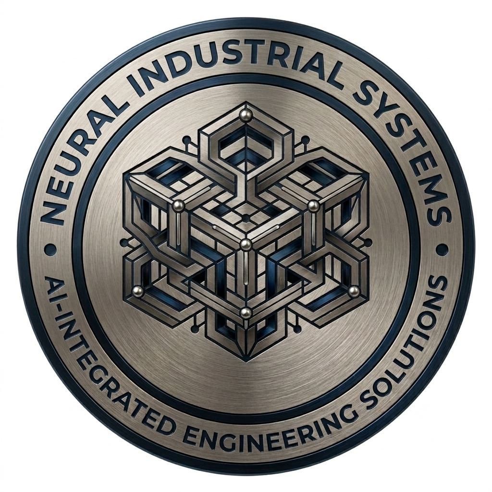

Industria que piensa, sistemas que aprenden
Ingeniería de Sistemas Cognitivos
Neural Industrial Systems diseña plataformas de IA, simulación computacional y gemelos digitales para las plantas, redes e infraestructuras más exigentes del mundo.
Ingeniería de precisión, pensada por redes neuronales.
NIS nace de la convergencia entre ingeniería industrial clásica —CAD, CAE, control de procesos— y sistemas de inteligencia artificial capaces de aprender el comportamiento de una planta en tiempo real.
Autonomía industrial
Plantas capaces de anticipar fallas, optimizar consumo energético y ajustar procesos sin intervención humana constante.
IA aplicada, no especulativa
Entregamos modelos entrenados sobre datos de planta reales, validados por ingenieros certificados en cada disciplina.
Precisión sobre promesas
Cada sistema que desplegamos se mide, se audita y se documenta. La confiabilidad es un requisito de diseño, no un extra.
Un stack de ingeniería completo, integrado con IA.
Desde el diseño asistido por computadora hasta el mantenimiento predictivo, cada disciplina se apoya en modelos entrenados sobre datos industriales reales.
Industrial AI
Modelos de predicción, clasificación y optimización entrenados sobre series temporales de planta.
CAD / CAE / CAM
Diseño, análisis y manufactura asistidos, integrados en un solo flujo de datos.
CFD & FEM
Simulación de fluidos y elementos finitos para validar diseño estructural y térmico.
Structural & Pipe Stress Analysis
Verificación normativa de tuberías, soportes y estructuras bajo carga operativa.
Machine & Deep Learning
Modelos predictivos a medida sobre datos operativos multivariable.
Custom Engineering Software
Aplicaciones de ingeniería a medida, integradas a los sistemas existentes del cliente.
Predictive Maintenance
Modelos de vida remanente y detección temprana de degradación de activos.
Engineering Consulting
Acompañamiento técnico en proyectos de transformación digital industrial.
De la simulación al activo en producción.
Trayectoria típica de un proyecto de ingeniería con IA integrada, de extremo a extremo.
Levantamiento y modelado
Captura de datos de planta, modelado CAD y construcción del gemelo digital base.
Simulación y validación
Análisis CFD/FEM y validación estructural bajo condiciones operativas reales.
Entrenamiento de modelos
Modelos de IA entrenados sobre históricos de sensores y eventos de planta.
Despliegue y monitoreo continuo
Integración con SCADA/PLC existentes y monitoreo predictivo en producción.
Desarrollos de IA aplicada, en producción.
Explora nuestros desarrollos interactivos de inteligencia artificial aplicada a ingeniería. Cada uno representa una solución implementada en entornos industriales.
Análisis de Viga
Simulación de comportamiento estructural de vigas bajo cargas variables, con análisis de estrés y deformación en tiempo real.
Abrir desarrolloNave Industrial
Diseño y análisis estructural de naves industriales con optimización de perfiles, cargas de viento y sismo integradas.
Abrir desarrolloTubería Tipo 1
Análisis de esfuerzos en tuberías con modelos de elementos finitos, análisis de flexibilidad y evaluación de soportes.
Abrir desarrolloTubería Tipo 2
Simulación avanzada de tuberías con análisis térmico, vibraciones y evaluación de fatiga por ciclos de presión.
Abrir desarrolloDBHE-HE Geotérmico
Gemelo digital de intercambiador de calor de pozo profundo con simulación CFD, gradiente geotérmico de 130°C y motor predictivo LSTM + XGBoost.
Abrir desarrolloSistema de Bombeo
Monitoreo predictivo de bombas industriales con análisis de vibraciones, cavitación y eficiencia hidráulica mediante IA.
Abrir desarrolloCompresor Reciprocante
Gemelo digital de compresor reciprocante con análisis dinámico de pistón-biela-cigüeñal, monitoreo de válvulas y detección temprana de fallas por vibración.
Abrir desarrolloReactor Catalítico
Gemelo digital de reactor catalítico con modelado cinético de reacción, monitoreo de temperatura de lecho y predicción de desactivación del catalizador mediante IA.
Abrir desarrolloCorporate Executive Organization
Executive Leadership Structure
Corporate governance designed to lead innovation, engineering excellence and industrial artificial intelligence at a global scale.
Chief Executive Officer
Global strategic direction and long-term vision of Neural Industrial Systems.
Chief Technology Officer
Platform architecture, computational engineering and AI infrastructure.
Chief Operating Officer
Global operations, project delivery and industrial client relationships.
Chief Artificial Intelligence Officer
Applied AI research and enterprise-wide model governance.
Hablemos de su próximo proyecto de ingeniería.
Cuéntenos el reto operativo o industrial que enfrenta y un ingeniero de NIS le contactará en menos de 48 horas.
Oficina central
Torre NIS, Distrito de Ingeniería Industrial
Correo
contact@neuralindustrial.systems
Redes
LinkedIn · GitHub · X